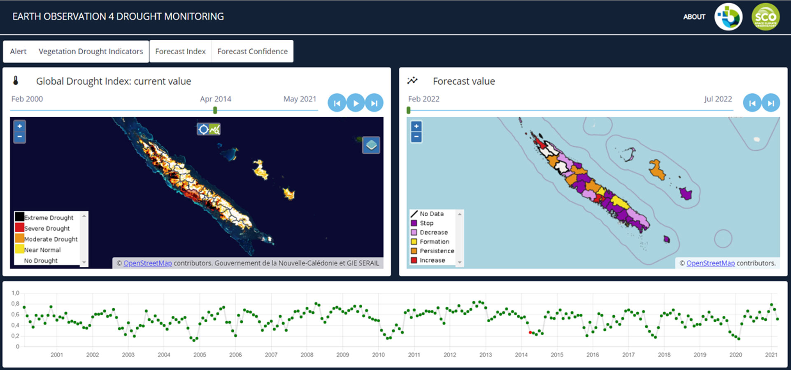
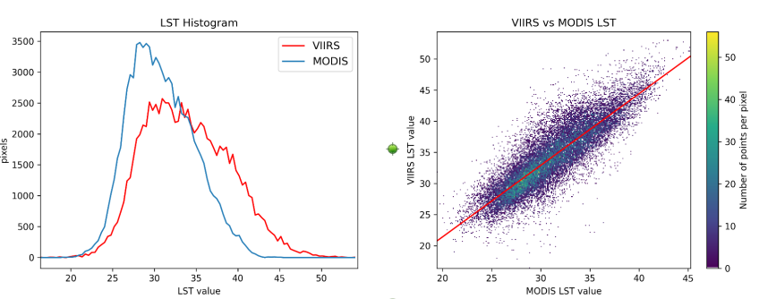

Suivi de la sécheresse dans les territoires insulaire du Pacifique
Rapport d’exécution technique
Sécheresse végétale, Pacifique Sud, Observation de la Terre


1 Contexte général du projet
Les évènements extrêmes de plus en plus présents dans le Pacifique (phénomènes El Nino & La Nina) ont des conséquences non négligeables sur les territoires insulaires. L’effet de la montée des eaux ou des épisodes de sécheresse est donc au centre des préoccupation dans de nombreuses îles du Pacifique (Vanuatu, Wallis-et-Futuna, Polynésie Française, etc.). Les évènements de sécheresse intenses ont des impacts indéniables sur la biodiversité, la ressource en eau et sur les cultures agricoles comme cela a pu être le cas en 2019 pour la Nouvelle-Calédonie.
Actuellement, le suivi et l’anticipation de ces épisodes de sécheresse se fait via des mesures météorologiques informant sur le déficit pluvieux et non pas sur le stress hydrique des plantes. Par ailleurs, les données sont uniquement disponibles sur quelques points de mesure et ne sont pas continues sur les territoires.
2 Description du projet “Suivi de la sécheresse dans les territoires insulaire du Pacifique”
Le projet proposé ici s’inscrit dans la continuité du travail mené dans le cadred du projet Space Climate Observatory, nommé EO4DroughtMonitoring1 sur la Nouvelle-Calédonie avec comme objectif principal de démontrer l’applicabilité et l’utilité d’un tel outil dans d’autres territoires insulaires du Pacifique. La démarche globale est ainsi de disposer d’un procédé adapté pour l’ensemble des territoires insulaires du Pacifique et qui pourrait par la suite être délivré en libre accès de façon opérationnelle en lien avec les acteurs centraux de la région.
Le projet présenté ici vise :
- à construire un indicateur de sécheresse végétale permettant de caractériser la situation actuelle mais aussi historique et prévisionnel, en fonction des données disponibles, obtenues sur les différents plateformes satellitaires et des instruments météorologiques du territoires concernés,
- mettre en production l’indicateur sur la Nouvelle-Calédonie, l’objectif étant de démontrer le caractère opérationnel de la solution,
- décliner la chaine de production pour les territoires de la région Pacifique,
- le valoriser à travers des interfaces et des services de consultation et de mise à disposition des données.
Cette solution fournie des données constituant une source d’informations importante dont les valorisations et apports peuvent être multiples : agriculture, gestion des ressources, sécurité (surveillance du risque incendie), état de l’environnement. Les produits satellites utilisés dans cet outil couvrent l’intégralité des territoires. L’ensemble des livrables est mis à disposition de la communauté sous licence open source type BSD2.
2.1 Parties prenantes
Le projet implique plusieurs partenaires techniques et scientifiques, notamment l’OEIL, INSIGHT, l’IRD Nouvelle-Calédonie, Météo-France Nouvelle-Calédonie, CSIRO, CPS, la Direction de l’agriculture de la Polynésie Française, Fidji et le Gouvernement du Vanuatu.
Le travail est mené par 3 entités principales :
L’Observatoire de l’Environnement pour la Nouvelle-Calédonie (OEIL) réalise le suivi de l’environnement sur le territoire en fournissant, via leurs plateformes opérationnelles, plusieurs indicateurs et outils de surveillance environnementale. Porteur du projet, l’OEIL a le rôle de cadrage global du projet, de valorisation et de portage final de l’indicateur sécheresse développé pour la NC. Grâce à son expertise dans le domaine, il s’assurera également du bon déroulement du travail mené par les différents partenaires sur les aspects techniques, thématiques via un soutien scientifique du Conseil Scientifique de l’OEIL.
INSIGHT est une startup néo-calédonienne du Groupe CIPAC (Compagnie Industrielle du Pacifique) dédiée à l’observation de la Terre par imagerie spatiale. INSIGHT a été en charge des développements de l’indicateur de sécheresse biophysique sur la Nouvelle-Calédonie, en collaboration avec Météo-France NC au moment du projet SCO. Dans la présente étude, INSIGHT est en charge de la mise en production des différentes chaines d’indicateur sur la Nouvelle-Calédonie, d’études techniques et scientifiques, et des développements supplémentaires pour l’accès et le traitement d’images satellites sur tous les territoires identifiés.
L’IRD Nouvelle-Calédonie (UMR EspaceDEV) apporte un soutien scientifique et technique à ce projet. De par son expertise en Observation de la Terre dédiée à l’étude de l’environnement Néo-Calédonien, cet organisme de recherche suivra de près les développements réalisés pour aider au bon déroulement du projet.
D’autres acteurs ont été identifiés pour être sollicités au cours de l’étude afin de disposer d’un soutien technique et thématique : METEO-FRANCE NOUVELLE-CALEDONIE, en tant que le dévelopeur actuel de la chaine des prévisions. Une convention avec Météo-France sur l’utilisation de la chaine en production et sur d’autres territoires à été signée (disponible en annexe \(\ref{sec-conv-MNF-OEIL}\))
CSIRO : expertise attendue dans l’exploitation des données Radar et du DataCube Australien
CPS : expertise attendue sur l’exploitation du DataCube Digital Earth Pacifique
Direction de l’agriculture de la Polynésie Française : collaboration attendue pour la mise à disposition de données météo in situ
Gouvernement ou Université du Vanuatu : collaboration attendue pour la mise à disposition de données météo in situ
AGENCE RURALE Nouvelle Calédonie : utilisateur probable des données d’indicateurs produites.
2.2 Méthodologie
La chaine de production sur la Nouvelle-Calédonie est présentée en Figure 1. La production de l’indicateur actuel est réalisée via trois sous chaines permettant d’accéder aux trois niveaux d’information sécheresse (communal, intra-communal, parcellaire).
L’ensemble des chaines forme un système de suivi et de prévision de la sécheresse dans les territoires du Pacifique. Chaque chaine est composée de plusieurs étapes de traitement, de calcul et de contrôle qualité. Les données d’entrée sont issues de différentes sources (satellites, données météo in situ, etc.) et sont traitées pour produire des indicateurs de sécheresse végétale (VAI, VHI, MAI, prévision).

### VAI : La chaine locale
La chaine locale fournie l’indicateur au niveau parcellaire (10 m), calculé à partir des indices NDWI issus de L8 et S2 préalablement prétraités et calibrés. L’indicateur VAI (Vegetation Anomaly Index ; Amri et al., 2011 ; Peters et al., 2002) sera estimé par comparaison au référentiel selon l’équation
\[ VAI = NDWI - \frac{\overline{NDWI}} {\sigma NDWI} \]
avec \(\overline{NDWI}\) la moyenne et \(\sigma{NDWI}\) l’écart-type calculés pour une décade (10 jours), sur tout l’historique. Cet indicateur est centré en 0, avec des valeurs négatives indiquant un état de stress anormal, et des valeurs positives indiquant un état favorable. A noter que pour cette échelle spécifique, une phase de post-traitement peut être intégrée afin de filtrer les régions de sols nus ou à végétation dense pouvant être d’un intérêt moindre pour un suivi parcellaire. Cette étape peut être réalisée à partir d’indices de NDVI calculés à partir des mêmes images L7/L8/L9/S2, mais impliquant également, une calibration radiométrique.
### VHI : La chaine globale
La chaine globale fournie l’indicateur au niveau intra-communal (1 km) à partir des indices MODIS (NDWI, LST). Ici, l’indicateur VHI (Vegetation Health Index ; Kogan, 1997, 2000) est estimé selon l’équation suivante : \[ VHI = \alpha * VCI + (1-\alpha) * TCI \]
avec \(\alpha = 0.5\), et où le VCI et le TCI sont définis selon Kogan (1995, 1997) et obtenus respectivement à partir du NDWI et de la LST. Cet indicateur est centré en 0,5. Un VHI de 0 correspondra à l’état le plus défavorable (végétation sèche), alors qu’une valeur de 1 correspondra à l’état le plus favorable (végétation en bonne santé).
2.2.1 MAI : La chaine d’alerte
La chaine d’alerte fournie un indicateur communal issu de la combinaison d’indicateurs satellites et météorologiques. L’objectif ici est de déterminer à quel stade se situe le déficit dans la relation de cause à effet de la sécheresse agricole (Sepulcre-Canto, 2012) : un déficit pluviométrique entrainant un déficit d’humidité du sol, ayant lui-même pour effet le stress hydrique de la végétation. Pour cela, nous intégrons les indicateurs fournis par Météo-France sur leurs stations (SPI, SPEI), l’indicateur VHI ainsi que l’indicateur d’anomalies d’humidités du sol MAI (Moisture Anomaly Index ; Amri et al., 2012 ; Le Page et Zribi, 2019), provenant des données micro-ondes ASCAT.
Trois niveaux d’alerte sécheresse seront alors fournis par commune : - Watch : Niveau d’alerte minimale correspondant à une détection de déficit pluviométrique, mais sans impact observé sur la surface végétalisé.
Warning : Niveau intermédiaire avec détection de déficit observé au niveau de la surface (humidité du sol, évapotranspiration), mais sans stress hydrique directement observé sur la végétation.
Alert : Niveau d’alerte maximale avec détection d’un état de stress hydrique de la végétation.
2.2.2 Indicateur prévisionnel
L’indicateur prévisionnel est issu des développements réalisés par Météo-France NC. Le produit se présente sous la forme de cartes à l’échelle communale informant sur les tendances d’évolution de la sécheresse végétale à +1 mois, +2 mois et +3 mois (à partir du mois en cours). Cet indicateur est obtenu à partir de la connaissance de deux types d’informations : - La forte corrélation observée entre les produits de sécheresse météorologique (en particulier le SPI-3 mois issus des stations) et l’indicateur global de sécheresse végétale (produit satellite VHI). Le SPI-3 mois est alors qualifié de « proxy » météorologique de la sécheresse végétale. - Les prévisions de précipitation informant sur les probabilités d’évolution de SPI (Lavaysse, 2020). Ces produits correspondent aux prévisions d’ensemble accessibles via le Global Drought Observatory, et qui ont été évaluées et calibrées localement via les données SPI issues des stations (réadaptation des scores et classes d’évolution au territoire).
Ces indicateurs peuvent ensuite être utilisés pour étudier, surveiller, analyser et prévoir les périodes de sécheresse dans les territoires monitorés.
L’algorithmie de chaque chaine est détaillée précisement dans la @algo-chaines.
La méthodologie pour les développements et validations scientifiques des indicateurs et des chaines de traitement est détaillée dans les rapports de production du projet SCO. Nous invitons le lecteur à se référer à ces rapports pour tout complément d’information à ce sujet.
2.2.3 Actualisation et livraison des produits
Afin de limiter l’impact des nuages sur les produits satellites tout en gardant une répétitivité adaptée à l’évolution de la sécheresse, le pas de temps sélectionné pour l’actualisation de l’indicateur de sécheresse locale (VAI) est de 10 jours, et de 8 jours pour l’indicateur de sécheresse globale (VHI).
Du fait de la mise à disposition des données météorologiques à un pas de temps mensuel, les cartes d’alertes et cartes de prévisions seront fournies au mois (milieu du mois suivant).
Les données météorologiques, incluant les produits observés (SPI, SPEI) et le les produits prévisionnels (tendances d’évolution), sont déposées par Météo-France NC sur un serveur dédié. L’accès à ce serveur se fait à travers un accès ftp fournis dans le cadre de la convention \(\ref{sec-conv-MNF-OEIL}\), et se chargera de récupérer les fichiers autour du 15 du mois suivant, date à laquelle les données seront complètes et validées par Météo-France.
Le chronogramme ci-dessous Figure 2 présente l’actualisation des indicateurs sur deux mois. Ce schéma est répété de manière à couvrir la totalité de la période en mode opérationnel. Il s’agit notamment de mettre en évidence la procédure de mise à disposition des produits pour leur production et leur diffusion opérationnelle.

- Livraison 1, au début du mois 2 incluant les produits infra-mensuels :
- indicateurs de sécheresse locale VAI obtenus durant le mois 1
- indicateurs de sécheresse globale VHI obtenus durant le mois 1
- Livraison 1bis, en milieu du mois 2 incluant :
- les produits mensuels d’alertes du mois 1
- les produits mensuels de prévisions du mois 1
- une synthèse mensuelle des indicateurs VAI et VHI agrégés sur le mois 1
- La livraison 2, en début du mois 3 incluant les produits infra-mensuels VAI et VHI du mois 2
2.2.4 Etudes réalisées au cours du projet
Le projet à permit d’ameliorer la chaine issu du SCO, sur certains points méthodologiques à travers la réalisation des études suivantes :
Étude d’une solution de gapfilling pour les données Landsat 7
Etude pour le choix du DataCube (GEE, Sentinel Hub, Data-Terra, Digital Earth Pacific)
Etude pour l’intégration du capteur VIIRS en remplacement de MODIS
Etude pour l’intégration du produit CHIRPS pour le calcul des indices SPI et SPEI
Ces études font partie des livrables du projet et sont disponibles en annexe Section \(\ref{Annexes}\).
2.3 Outils et technologies utilisés
2.3.1 Télédétection à partir de données accessibles
Le projet repose sur l’utilisation de données open data pour la télédétection de la sécheresse végétale. Ces données sont essentielles pour l’analyse et la surveillance des variations de la santé de la végétation, de l’humidité et la température.
- Sentinel 2 pour l’optique multispectrale (NDVI, NDWI)
- Landsat 7, 8, 9 pour l’optique multispectrale
- MODIS: Aqua, Terra pour le thermique
- ASCAT pour les micro-ondes
2.3.2 Utilisation du langage Python pour le développement des chaines de traitement
Le langage Python est utilisé pour le développement des chaines de traitement. Il est largement utilisé dans le domaine de la télédétection et de l’analyse de données. De plus, nous utiliseons conda pour la gestion des dépendances et des environnements virtuels de développement, de qualification et de production. Les dépendances de la version 1.0.0 sont disponible en Section 4.3.
La documentation de l’ensemble de la chaine est disponible sur le dépôt git de l’OEIL et en annexe
2.3.3 Utilisation de Google Earth Engine
Google Earth Engine est utilisé pour accéder aux sources de données et pour réaliser certains traitements sur les données satellitaires. Cette plateforme cloud permet d’analyser de grandes quantités de données géospatiales de manière efficace et rapide.
2.3.4 Utilisation de docker pour l’orchestration des chaines de traitement
Docker est utilisé pour l’orchestration des chaînes de traitement. Cette technologie de conteneurisation garantit la portabilité et la reproductibilité des environnements de développement, facilitant ainsi le déploiement et la gestion des applications.
2.3.5 Utilisation de Azure devops
Azure DevOps est une suite d’outils utilisés dans le cadre du projet pour le déploiement des chaînes de traitement (CI), la gestion de projet, la collaboration, la gestion du code source (GIT), la documentation, le suivi des version, des bugs et des évolutions, ce qui permet une gestion très efficace du projet.
2.3.5.1 Gestion de projet
Azure DevOps offre des fonctionnalités avancées de gestion de projet, notamment la planification agile, le suivi des tâches, la création de tableaux Kanban et la gestion des sprints. Ces fonctionnalités permettent une organisation efficace des activités du projet, en assurant une visibilité et une traçabilité optimales des progrès réalisés.
2.3.5.2 Collaboration
Azure DevOps facilite la collaboration en offrant des outils de communication intégrés, tels que les commentaires sur les tâches, les discussions dans les problèmes et les pull requests.
2.3.6 Gestion du code source
Azure DevOps fournit des fonctionnalités robustes de contrôle de version et de gestion du code source. Grâce à l’intégration native avec Git, les développeurs peuvent travailler efficacement sur le code, créer des branches, fusionner des modifications et suivre l’évolution du code source au fil du temps.
2.3.7 Déploiement continu (CI/CD)
L’intégration continue (CI) et le déploiement continu (CD) sont des pratiques essentielles pour assurer la qualité et la fiabilité du logiciel. Azure DevOps propose des pipelines CI/CD flexibles et personnalisables, permettant d’automatiser les tests, la compilation, la validation et le déploiement des applications de manière cohérente et reproductible. C’est cette “brique” qui permet de parametrer et d’orchestrer le déploiement en production.
3 Déroulement du projet
3.1 Phasage du projet
- Phase 0 (Septembre 2022 – Mars 2023): Réunion de démarrage, monté en compétence et, études préalables.
- Phase 1 (Janvier 2023 – Septembre 2023): Adaptation de la chaine développée pendant le projet SCO 3 pour la Nouvelle-Calédonie.
- Phase 2 (Septembre 2023 – Janvier 2024): Adaptations et évolutions de la chaine pour la régionalisation Pacifique.
- Phases 3 (Juin 2023 – Avril 2024) : Orchestration de la chaine et monitoring.
- Phases 4 (Decembre 2023 – Août 2024): Restitutions, finalisation.
3.2 Bilan des actions réalisées
Le développement et la mise en production du système sécheresse végétale est effectif. Les indicateurs VAI (locale), VHI (globale) et d’alerte MAI pour la Nouvelle-Calédonie sont produits de manière continue sur le serveur hébérgé par INSIGHT. Les indicateurs ne sont pas encore accessibles directement par une interface web de consultation et de téléchargement mais ce point est en cours de reflexion. La chaine prévisionnelle vient d’être finalisé et demande encore un effort pour son intégration dans le système. Ce point est en cours de mise en oeuvre.
La collaboration entre les différents partenaires techniques et scientifiques de la région pacifique ont bien eu lieu à travers des échanges et de restitutions. Nous avons adapté les chaines de traitement et produit les indicateurs pour certaines partie du territoire de Fidji, du Vanuatu et de la polynesie Française. Le système n’a toutefois pas les indicateur nécessitant des données météo in situ (alerte et prévision).
3.2.1 Exemple de résultats obtenus


3.2.2 Proposition pour la valoriation des résultats des chaines
3.2.2.1 Catalogue STAC (SpatioTemporal Asset Catalog)
Rendre l’accès aux données facilitée via la mise en place d’un catalogue STAC (SpatioTemporal Asset Catalog) pour permettre aux utilisateurs de découvrir, explorer et accéder aux données de manière efficace.

Ce type de catalogue permettrait par ailleur de faciliter le partage et le moissonage par d’autre plateforme comme la plateforme Data du Gouvernement de Nouvelle Calédonie et/ou le Pacifique Data Hub mis en place par la CPS.
3.2.2.2 Intégration des données dans le cube Digital Earth Pacific
La récente mise en production du DataCube Digital Earth Pacific offre une opportunité pour intégrer les données de sécheresse végétale dans ce cube. Cette intégration permettrait de faciliter l’accès et l’exploitation des données par les utilisateurs finaux, notamment les décideurs et les gestionnaires de ressources naturelles.
Des échanges avec la CPS sont prévues prochainement dans ce sens afin de determiner les modalités de mise en oeuvre d’une telle intégration.

3.2.2.2.1 Développement d’une application web de consultation de données
Nous souhaitons mettre a disposition d’utilisateur une interface de consultation simplifié et intuitive pour accéder aux données du dispositif sécheresse végétale. Cette application web pourrait permettre de visualiser les données de sécheresse dans leurs dimensions temporelle et spatiale. Le développement d’un telle application doit d’abord faire l’objet d’un projet d’accompagnement de l’agence rural de Nouvelle-Calédonie pour définir les fonctionnalités à prévoir en cohérences à leurs besoins spécifiques et des utilisateurs finaux.

3.2.3 Livrables
- Étude gapfilling Landsat 7 Section 4.4.1
- Etude pour le choix du DataCube (GEE, Sentinel Hub, Data-Terra, Digital Earth Pacific) \(\ref{sec-datacube}\)
- Etude pour l’intégration du capteur VIIRS en remplacement de MODIS Section 4.4.3
- Document d’aide au controle qualité des données des chaines Section 4.5
- Présentation PGRSC (OperationalVegetationDroughtProcessing_PGRSC_Neuhauser_et_al_2023) \(\ref{sec-pgrsc}\)
- Code source
- chaine locale (documentation d’exploitation et documentation de code associées)
- chaine globale (documentation d’exploitation et documentation de code associées)
- chaine alerte (documentation d’exploitation et documentation de code associées)
- chaine prévisionnelle - MFNC (documentation d’exploitation et documentation de code associées)
- code source du calcul SPI et SPEI avec GEE via l’utilisation des données du programme CHIRPS (documentation de code associées)
- Données/fichiers produits en continu
3.2.3.1 Nombre de fichiers produit à ce jour
| Indice/indicateur | Source | Fréquence | Nombre de fichiers |
|---|---|---|---|
| NDVI/NDWI | Landsat 7 8 9/Sentinel 2 | par décade | 4816 |
| LST | MODIS | par décade | 1724 |
| LST | MODIS | par mois | 577 |
| SwI | ASCAT | par jour | 6102 |
| SwI | ASCAT | par mois | 205 |
| VHI | chaine global | par decade | 864 |
| VHI | chaine global | par mois | 290 |
| VAI | chaine locale | par decade | 4020 |
| MAI | chaine alerte | par mois | 206 |
Le volume de stackage nécessaire à la production de l’indicateur sur la Nouvelle-Calédonie a été estimé dans Figure 7

3.2.4 Réunions et échanges
- 3 COPILS
- 2 restitutions des études réalisées
- 15 Ateliers de travail
- 1 réunion avec le conseil Scientifique de l’OEIL
- 3 visio-conférences avec les partenaires de la région pacifique
3.2.5 Restitutions publiques
Une présentation de la chaine a été faite à la conference du 27 Novembre au 1 Decembre 2023 à Fiji - PGRSC: An Operational Vegetation Drought Processing Chain based on Google Earth Engine satellite imagery and meteorological products. Cette conférence a retenue l’attention de 250 participants. Le contenu de la présentation est disponible en annexe \(\ref{sec-pgrsc}\)
4 Annexes
4.1 Documentation des chaines de traitement
4.2 EO4DM PIPELINE
4.2.1 Table des Matières
4.2.2 Présentation générale
Ce dépôt contient la pipeline de traitement permettant la production des indicateurs de sécheresse développés dans le cadre du projet EO4DM (Earth Observation For Drought Monitoring). A la racine, se trouvent les fichiers servant à l’installation, l’intégration continue ainsi que la configuration de lancement de la pipeline.
Le dossier “dmpipeline” contient les différents packages et scripts en python pour le traitement des produits intervenant dans la pipeline (images satellites, données météorologiques). On y trouve les scripts principaux des trois chaines LOCALE, GLOBALE et ALERTE : - LocalDrought_ProcessingChain.py : sécheresse végétale à haute résolution spatiale (10 m) - GlobalDrought_ProcessingChain.py : sécheresse végétale à moyenne résolution spatiale (500 m) - AlertDrought_ProcessingChain.py : alertes sécheresse à échelle régionale (synthèse par zones)
Quatre sous-dossiers correspondent aux modules (packages) suivants : - ALERT_Processing : scripts de la chaine Alerte et identifiants pour l’accès aux produits Copernicus (ftp_accounts) - DROUGHT_Processing : scripts pour le calcul des indicateurs sécheresse aux échelles locales et globales - GEE_Processing : scripts pour l’accès, le prétraitement et le téléchargement des produits GEE (Google Earth Engine), ainsi que les identifiants Google (gee_accounts) - GEOSTATS_Processing : scripts pour le calcul de statistiques spatiales des indicateurs
Le sous-dossier tests_notebooks contient des notebooks jupyter pour le test de certaines fonctionnalités des chaines. Certains tests unitaires restent à faire.
Le sous-dossier ANNEX_Data contient des données annexes pouvant être nécessaires à la pipeline : - Landsat_Grid_Word : contours des différentes tuiles landsat sur l’ensemble du globe, nécessairement utilisées par la chaine LOCALE - Territory : exemple de données pouvant être utilisées par la chaine GLOBALE pour le calcul de statistiques spatiales (/Areas, /Landcover), et nécessairement utilisées par la chaine ALERTE (/Stations) . Ici, à titre d’exemple, les produits fournis sont ceux de la Nouvelle-Calédonie et devront être adaptés/modifiés pour d’autres territoires d’étude.
Un sous-dossier DOC contient de la documentation utile.
La pipeline peut s’utiliser de deux manières : - Utilisation “Test”, pour un production en un seul coup, chaine par chaine, et qui est recommandée pour une première prise en main des chaines (cf. section Utilisation “Test”) - Utilisation “Service-Régulier, pour une production continue et parallelisée des chaines via un environnenent Docker, adaptée à la mise en place d’un service de production régulier (cf. section Utilisation “Service-Régulier”)
4.2.3 Configuration Google Earth Engine (GEE)
Pour collecter et prétraiter les produits satellites MODIS, LANDSAT-7-8-9 et SENTINEL-2, les chaines LOCALES et GLOBALES se basent sur l’API python GEE (earthengine-api).
Afin que la pipeline appelle correctement l’API, l’utilisateur doit au préalable : 1) S’enregistrer sur GEE et créer un projet dédié à l’utilisation de la pipeline (cf. Register) 2) Créer un compte de service Google dédié qui permettra l’authentification/initialisation automatique de l’API GEE à chaque lancement de la pipeline (cf. Service Acccount) 3) Générer une clé privée au format JSON contenant les identifiants du compte 4) Placer la clé privée dans le dossier gee_accounts (cf. fichier exemple eo4dm_service_key.json)
Depuis l’espace en ligne du projet GEE (Asset Manager, Code Editor) : 1) Créer un nouveau dossier ‘Annex’ (cf. Managing Assets) 2) Importer le fichier Landsat_Grid_Word.zip dans ‘projects/id-du-projet-gee/assets’ (cf. Importing Table Data) 3) Déplacer le fichier Landsat_Grid_Word dans ‘Annex’
Pour la chaine LOCALE, il est possible de définir une zone selon laquelle les indices GEE seront découpés (par défault la découpe est faite selon l’emprise des tuiles Landsat). Pour cela : 1) Générer une couche vecteur au format shapefile contenant la (les) contour(s) de la zone (plusieurs polygones sont possibles) 2) Compresser dans un fichier zip nommé ‘Landmask_Grid_ROI.zip’ 3) Depuis l’espace en ligne du projet GEE, importer le fichier Landmask_Grid_ROI dans ‘projects/id-du-projet-gee/assets’, puis le déplacer dans ‘Annex’
4.2.4 Utilisation “Test”
Le fichier setup.py installe les différents modules de la pipeline.
Les librairies python nécessaires sont : - rasterio - pandas - geopandas - gdal - earthengine-api - PyDrive - python-dotenv - setuptools - scipy - tqdm
4.2.4.1 Fichier de configuration
Le fichier Config_process.env configure le lancement des chaines. Plusieurs variables d’environnement sont à définir selon l’usage souhaité. Pour une utilisation via Docker, ne pas modifier ce fichier et se référer directement à la section Utilisation “Service-Régulier.
Les différentes variables de configuration et leur fonction sont décrites dans le fichier, dont certaines sont facultatives. On y trouve tout d’abord les chemins vers les dossiers d’écriture (WRK_DIR) et de lecture (DATA_HISTO, ANNEX_DIR) des chaines, spécifiques à l’environnement d’installation de la pipeline. Ensuite, un certain nombre de variables de fonctionnement permettent de paramétrer les traitements à réaliser. Voici les principales variables à renseigner : - TERRITORY : nom anglais du Territoire/Pays à traiter, nécessaire dans GEE pour collecter les produits satellites - MODE : Mode de fonctionnement des chaines (AUTO, MANUAL, INDICES, DROUGHT) - PERIOD_START : Date de début de la période à traiter (inclusive) - PERIOD_END : Date de fin de la période à traiter (exclusive) - TILES_L : Nom des tuiles landsat à traiter (facultatif) - TILES_S2 : Nom des tuiles sentinel-2 à traiter (facultatif)
4.2.4.2 Installer via pip
Le fichier libraries décrit les dépendances nécessaires.
S’assurer d’avoir installé virtualenv, se placer à la racine (dossier EO4DM), et exécuter :
python -m venv dmpipeline
source dmpipeline/bin/activate (linux)
./dmpipeline/Scripts/Activate.ps1 (windows)
pip install -r libraries.txt
python setup.py installInstaller rasterio avec pip peut être problématique, en particulier avec Windows (cf. link). Si c’est le cas, privilégier conda.
4.2.4.3 Installer via conda
Le fichier environment.yml décrit les dépendances nécessaires.
Exécuter :
conda env create --file environment.yml
conda activate dmpipeline
python setup.py install4.2.4.4 Exécution
Une fois le fichier de configuration complété, chaque chaine se lance de manière indépendante. Ici, chaque chaine sera exécutée une seule fois sur la période et la région souhaitées. Une fois l’ensemble des indicateurs calculés, la chaine s’arrête et c’est à l’utilisateur de la relancer si nécessaire.
Exécuter la chaine locale :
localDMExécuter la chaine globale :
globalDMExécuter la chaine alerte :
alertDM4.2.5 Utilisation “Service-Régulier”
Il est possible de lancer et exécuter les différentes chaines via Docker. Chaque chaine aura ainsi son conteneur Docker associé, mais basée sur une image commune qui contiendra l’ensemble des librairies nécessaires au projet en utilisant un environnement Conda. Cette image est basée sur Linux, avec une installation de Python et Conda : - Dockerfile contient les instructions pour la construction de l’image Docker - docker-compose.yml définit les services des différents dockers (variables entrées/sorties, image docker utilisée)
4.2.5.1 Fonctionement Docker
Afin de pouvoir exécuter la pipeline selon différents modes, le dockerfile lance le fichier entrypoint.sh. Celui-ci prend en entrée la variable d’environnement MODE définie dans le dockercompose et permettant un lancement : - soit automatique et continue, qui fait appel au script python control_autorun.py dans lequel une boucle while exécute la chaine de traitement en continue - soit en un seul coup (autres valeurs de MODE), équivalent à l’utilisation “Test” de la pipeline.
Tous les conteneurs sont regroupés dans le fichier docker-compose.yml où il est possible de paramétrer le script à exécuter via des variables d’environnement. Ces variables sont ensuite lues par le fichier de configuration Config_process.env. S’assurer donc de bien remplir le dockercompose avec les variables attendues en configuration. Toute variable non fournie dans le dockercompose sera considérée comme None dans le fichier de configuration, ce qui entrainera une erreur si les variables obligatoires ne sont pas définies.
La variable d’environnement WRK_DIR est par défaut reliée à la variable définie dans le fichier azure-pipelines.yml (cf. Intégration Continue (CI)). Dans le cas d’une utilisation sans CI de la pipeline, paramétrer directement le chemin du WRK_DIR dans le dockercompose (- WRK_DIR=chemin…).
Le fichier docker-compose.yml décrit à minima 3 dockers pour le lancement des 3 chaines principales. Néanmoins, il peut contenir autant de descriptions dockers que souhaitées, correspondant par exemple à différents cas d’usages : territoires, périodes, modes de lancements, etc. S’assurer de garder les mêmes paramètres d’entrées/sorties, en les mettant à jour selon l’usage souhaité (TERRITORY=…, MODE=…, PERIOD=…).
Les logs des scripts sont redirigés vers la sortie du conteneur pour les voir apparaître dans les logs via docker logs <container> -f. Pour cela, la sortie des scripts est redirigée vers le fichier /proc/1/fd/1 qui est en fait la sortie du conteneur. L’instruction 2>&1 est également ajoutée pour que les erreurs soient retournées à la sortie du conteneur.
4.2.6 Exécution Docker
S’assurer au préalable d’avoir installé Docker sur sa machine.
Pour construire, créer/recréer les dockers et démarrer en mode détaché (arrière plan), exécuter :
docker-compose up -d --build --force-recreatePour stopper les dokers, exécuter :
docker-compose down4.2.7 Algorithmes
Les différentes chaines de la pipeline, les étapes principales de traitements, ainsi que les produits d’entrée et de sortie, sont synthétisés dans le schéma SCHEMA_GENERAL_EO4DM : 
Le fichier ALGO_CHAINES_EO4DM présente et décrit les algorithmes des chaines ALERTES, GLOBALES et LOCALES : 
4.2.8 Cas d’usages
/! NE TRAITE POUR LE MOMENT QUE LES CHAINES GLOBALES/LOCALES
S’assurer d’avoir correctement configuré l’accès à l’API GEE Configuration Google Earth Engine (GEE).
4.2.8.1 Préparation du dossier ANNEX
Pour la chaine GLOBALE, s’il est prévu de fournir des statistiques spatiales par zones (DROUGHT_STATS=1) : - Créer le dossier ANNEX à l’endroit correspondant au chemin ANNEX_DIR donné dans le fichier de config - Y copier le dossier Territory et son contenu - Renommer le dossier Territory selon le nom anglais du territoire à traiter, équivalent à la variable TERRITORY du fichier de configuration (en remplaçant les espaces et enventuels caractères spéciaux par des _) - Placer dans le dossier Areas le shapefile contenant les contours des zones sur lesquelles seront calculées les statistiques - Il est possible (facultatif) de masquer certaines surfaces à partir d’un masque d’occupation du sol ESRI contenu dans le dossier Landcover. Cette phase demande encore des développements et ne fonctionne que pour la Nouvelle-Calédonie (fichier .tif fourni avec le code). Dans le cas où un autre territoire que la Nouvelle-Calédonie serait traité, veiller à supprimer le fichier .tif sinon une erreur surviendra au moment du calcul des statistiques.
Pour la chaine LOCALE, quelque soit la configuration de lancement : - Créer le dossier ANNEX (si pas déjà fait) à l’endroit correspondant au chemin ANNEX_DIR donné dans le fichier de config - Y copier le dossier Landsat_Grid_Word - Dans le dossier Landsat_Grid_Word, y décompresser le fichier zip
Le fichier de configuration Config_process.env est à compléter selon les préconisations ci-dessous.
4.2.8.2 Préconisations de configuration pour un premier test de lancement (MODE = MANUEL)
Pour un premier lancement des chaines sur un nouveau territoire, lancer celles-ci en mode manuel (MODE=MANUAL) sur une période d’un mois ou deux afin de vérifier la bonne exécution des différentes étapes de traitements ainsi que les produits fournis (indices, indicateurs). Pour la chaine LOCALE, idéalement se placer sur une période diposant à la fois de produits Landsat et S2 (2019 - ce jour)
Les variables d’environnement ASSET_EXPORT_* permettent de conserver sur GEE (Assets) les indices mono-date prétraités. Cela peut être utile pour : - Vérifier les indices mono-date en cas de production d’indices composites inattendus - Gagner du temps lors de la relance de la chaine sur une période déjà traitée. Si les indices mono-date sont déjà présents sur GEE et que ASSET_EXPORT_*=1, la chaine vient directement les lire, permettant un calcul plus rapide par la suite des indices composites.
Pour la chaine GLOBALE : - Définir la bounding box d’extraction des produits MODIS (lon_min, lat_min, lon_max, lat_max). A savoir que ce paramétrage est obligatoire lors du premier lancement, mais qu’il est ensuite facultatif pour de prochains lancements de la chaine sur la même zone (la chaine redécoupera ensuite les nouveaux indices selon l’emprise des produits historiques déjà calculés) - Si calcul des statistiques spatiales, mettre DROUGHT_STATS à 1, et paramétrer KEY_STAT avec le nom du champ contenant les noms des zones (dans fichier shapefile du dossier Areas). KEY_STAT est facultatif, mais dans ce cas le champ doit être nommé ‘nom’.
Pour la chaine LOCALE, les tuiles Landsat et S2 à collecter sur GEE peuvent être pré-définies par l’utilisateur pour réduire le nombre de produits satellites haute résolution à traiter. Cela peut être utile pour des premiers tests, afin de gagner du temps. Si aucune tuile n’est donnée, la chaine collectera automatiquement les tuiles interceptant le territoire (TERRITORY) ou la zone de découpe fournie par l’utilisateur via le fichier Landmask_Grid_ROI (si LANDMASK_ROI=1).
A l’issue des traitements, contrôler si les dossiers de sortie de run (WRK_DIR/RUN_*) contiennent bien les produits attendus selon les préconisations décrites dans le fichier PROCEDURE_QUALITE_INDICATEURS. Vérifier si les produits historiques sont également copiés vers le DATA_HISTO, à savoir : - indices composites (décades, mois) - indicateurs (décades, mois) - table(s) contenant les séries temporelles des statistiques spatiales pour chaque zone (chaine GLOBALE, si calcul demandé depuis fichier de config).
4.2.8.2.1 Préconisations de configuration pour lancement historique (MODE = AUTO)
Lancer les chaines en mode AUTO pour que celles-ci calculent automatiquement le début et la fin de la période du référentiel historique, correspondant respectivement à la date du premier produit trouvé sur GEE et la date de fin de la décade complète la plus récente (inutile de remplir PERIOD_START et PERIOD_END). Les chaines étant indépendantes, les référentiels historiques peuvent être différents d’une chaine à l’autre.
Mettre ASSET_EXPORT_* à 0 pour gagner du temps, ou alors s’assurer que suffisement d’espace est disponible sur GEE pour contenir l’ensemble des produits mono-dates. Pour la chaine LOCALE, les 250 Go d’espace GEE mis à disposition seront parfois insuffisants selon le territoire traité. Nous recommandons de ne pas paramétrer l’export sur GEE lors de l’exécution de la chaine LOCALE sur tout l’historique (2000 - ce jour).
A noter : en utilisation sous docker (“Service-Regulier”), le mode AUTO permettra également de relancer automatiquement les chaines lorsque de nouveaux produits seront disponibles sur GEE (ce qui n’est pas le cas en utilisation “Test”).
4.2.8.2.2 Calcul des indices ou indicateurs uniquement (MODE = INDICES/DROUGHT)
Il est possible de lancer qu’une partie des traitements de la chaine.
Le mode INDICE permet de calculer uniquement les indices composites en fixant manuellement la période de traitement. Peut s’avérer utile si besoin de recaculer les indices pour une période spécifique (produits erronés, pertes de données), puis relancer la chaine en mode AUTO par exemple.
Le mode DROUGHT permet de calculer uniquement les indicateurs. Cela implique de disposer au préalable d’un référentiel historique d’indices déjà calculés. Peut être utile pour mettre à jour les indicateurs sans recalcul des indices composites. L’utilisateur peut donner une période en entrée qui définira les mois de l’année à recalculer, les indicateurs étant calculés par rapport à des anomalies a minima mensuelles (VHI), voire décadaires (VHI, VAI). Par exemple, le paramétrage ‘PERIOD_START=2020-01-01’ et ‘PERIOD_END=2020-03-01’ entrainera un calcul des indicateurs pour tous les mois de Janvier et Février disponibles (PERIOD_END est exclusive). Ici seul le numéro du mois compte dans ce qui est donné en entrée de PERIOD_START et PERIOD_END. Si aucune période n’est donnée, tous les mois de l’année disponibles seront mis à jour.
4.2.9 Intégration Continue (CI)
4.2.9.1 Agent Azure DevOps
L’installation de l’agent Azure DevOps, assurant le bon déploiement de ce projet sur le serveur INSIGHT, a été décrit dans une documentation interne de l’Oeil Backup afin d’assurer une centralisation de l’information des procedures d’exploitation de l’infrastructure générale de l’Observatoire.
4.2.9.2 Déclenchement
L’intégration continue (CI) ne se déclenche qu’à 2 conditions : - un commit vient d’être poussé sur la branche master - un tag vient d’être créé au format : v..* (ex: v1.0.2) Si un commit est poussé sur une autre branche que master ou si un tag est créé qui n’est pas au format indiqué, aucun déploiement ne sera exécuté.
Lorsqu’un commit est poussé sur le branche master, c’est le serveur de QUALIF qui est mis à jour. Lorsqu’un tag est poussé (au bon format), c’est le serveur de PROD qui est mis à jour.
/! DOC PROJET BACKUP ??
Pour l’instant, seul l’agent Azure du serveur de QUALIF a été déployé, le serveur de PROD n’étant pas encore disponible. Lorsque ce dernier sera disponible, il faudra créer un nouveau pool d’agent et y déployer un nouvel agent Azure dessus. Pour ce faire, il suffit de suivre la documentation du projet Backup (partie Installation d'un agent Azure sur un serveur extérieur). Il faudra ensuite modifier le fichier azure-pipelines.yml de ce projet pour mettre à jour le nom du pool Azure dans le job qui déploie sur le serveur de PROD (cf. note #TODO).
4.3 Dépendances python des chaines version 1.0.0
4.4 Etudes réalisées
4.4.1 Etude gapfilling Landsat 7
L’étude réalisée sur le gapfilling des données Landsat 7 a permis de mettre en évidence l’efficacité de la méthode de gapfilling utilisée pour combler les données manquantes. Les résultats obtenus montrent une amélioration significative de la qualité des données après gapfilling. Les images obtenues après gapfilling présentent une cohérence spatiale et temporelle satisfaisante, ce qui permet d’obtenir des indicateurs de sécheresse plus fiables et précis.


4.4.2 Etude CHIRPS
4.4.3 Etude décommissionnement MODIS
4.4.3.1 Données optique, indicateur NDWI
4.4.3.2 Données de température
